We demonstrate that gradient-based data valuation produces curriculum orderings that significantly outperform metadata-based heuristics for training game-theoretic motion planners. We apply TracIn gradient-similarity scoring to GameFormer on the nuPlan benchmark and construct a curriculum that weights training scenarios by their estimated contribution to validation loss reduction.
The figure below shows representative driving scenarios from four quadrants of the TracIn × Metadata scoring space, illustrating the orthogonality between the two scoring methods (Spearman ρ = −0.014). High-metadata scenarios feature dense multi-agent interactions, while high-TracIn scenarios need not appear visually complex — gradient-based valuation captures training dynamics invisible to hand-crafted features.
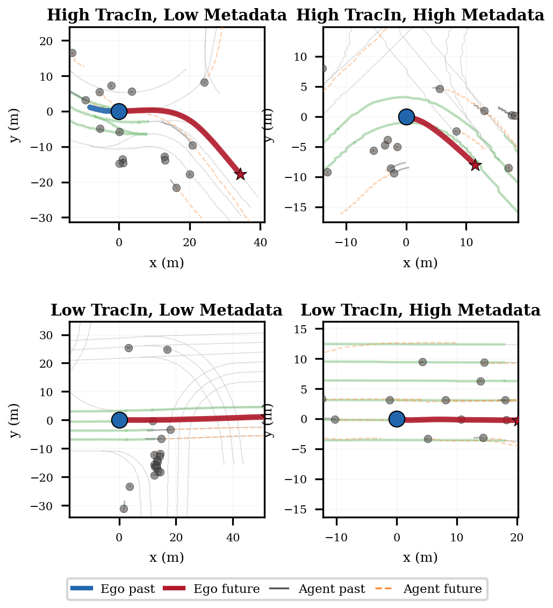
Four quadrants of the TracIn × Metadata scoring space. Ego past trajectory (blue), ego future (red), neighbor past (gray), neighbor future (orange dashed).
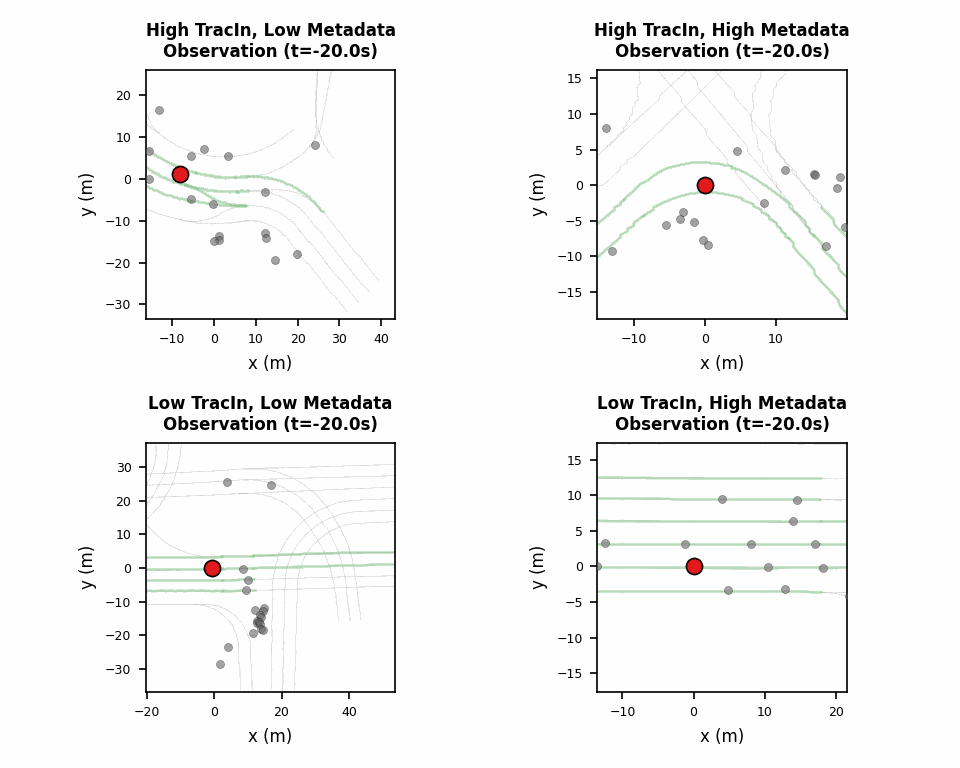
Animated 2×2 comparison: each panel shows a scenario from one TracIn × Metadata quadrant with observation → future rollout.
How do driving scenarios change across the TracIn score spectrum? The grid below animates scenarios sampled from percentile tiers (top-5%, top-25%, median, bottom-25%, bottom-5%), each with a color-coded border from green (highest value) to red (lowest value).
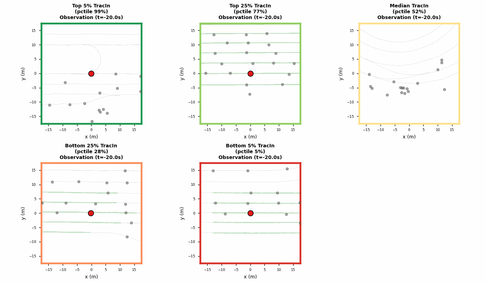
TracIn score gradient: animated trajectory rollouts from six percentile tiers. Green border = high gradient value; red = low gradient value.
Six representative scenarios, each selected to highlight a different interaction characteristic from the metadata scoring features:
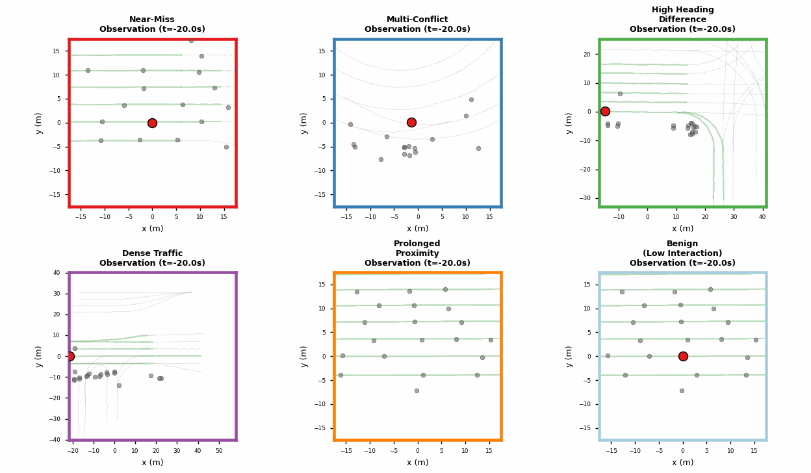
Six interaction types: Near-Miss, Multi-Conflict, High Heading Difference, Dense Traffic (20 agents), Prolonged Proximity, and Benign.
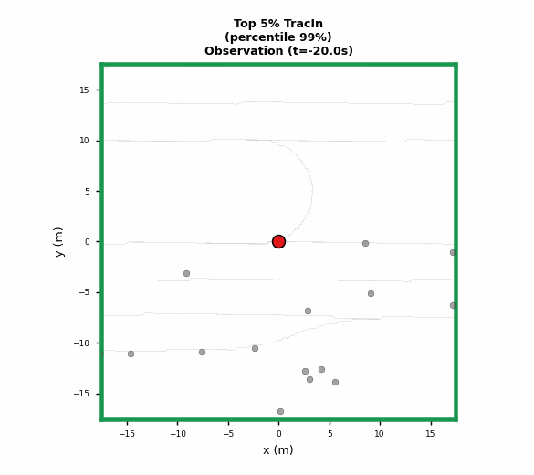
Top 5% — Gradient-critical
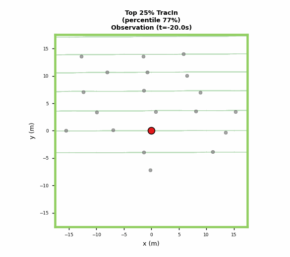
Top 25% — High-value
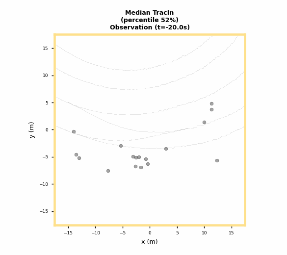
Median — Typical
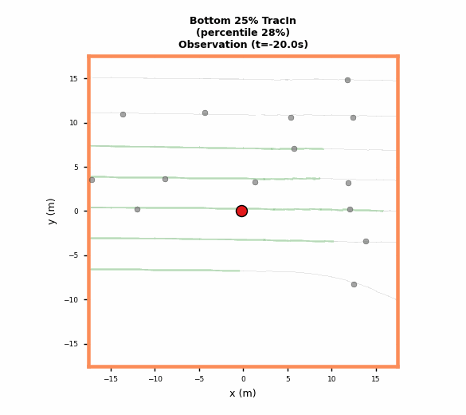
Bottom 25% — Low-value
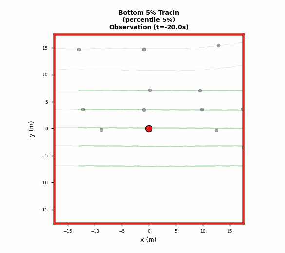
Bottom 5% — Counter-productive
The core claim of this work is sample efficiency: given the same 5,148 training scenarios and 20 training epochs, gradient-based curriculum learning produces a model with better trajectory predictions. Each animation shows the ground-truth trajectory (solid green) vs. the model prediction (dashed red) for the same validation scenario under both models.
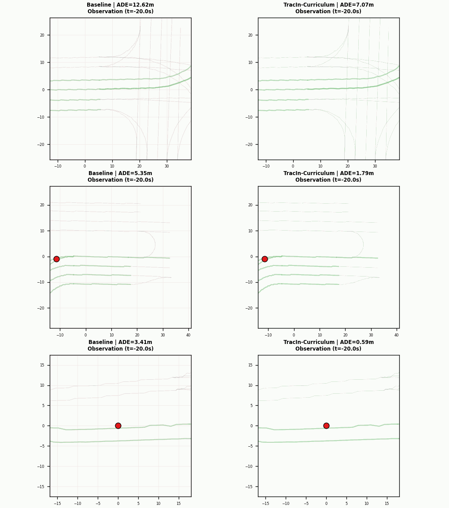
Three validation scenarios: Baseline (left, red tint) vs. TracIn-Curriculum (right, green tint). Green = ground truth, red dashed = prediction.
Scenario 1 — Dense Las Vegas intersection (10 agents). Baseline ADE: 12.62 m → Curriculum ADE: 7.07 m (−5.55 m).
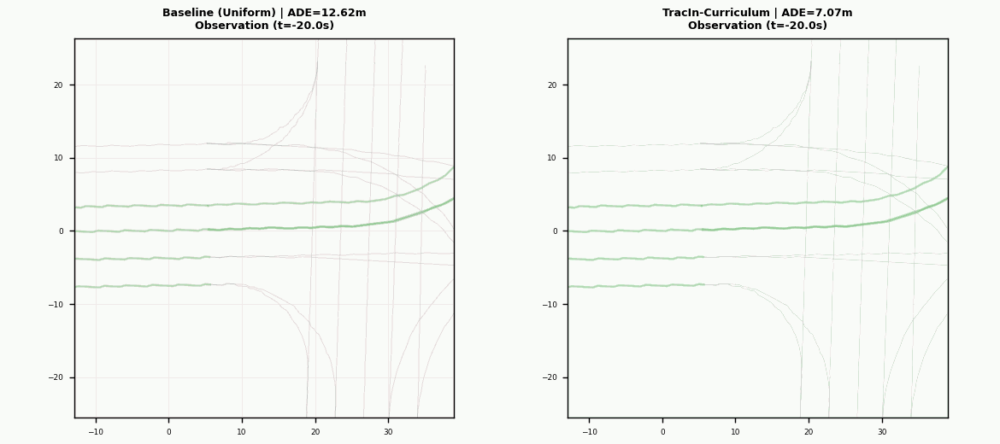
Scenario 2 — Las Vegas multi-lane negotiation. Baseline ADE: 5.35 m → Curriculum ADE: 1.79 m (−3.57 m).
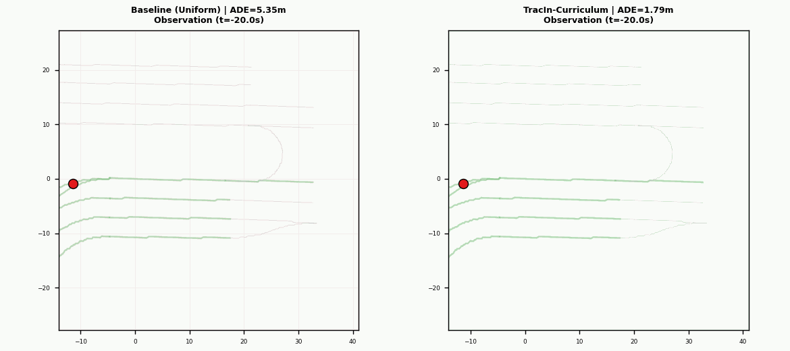
Scenario 3 — Boston urban driving. Baseline ADE: 3.41 m → Curriculum ADE: 0.59 m (−2.82 m).
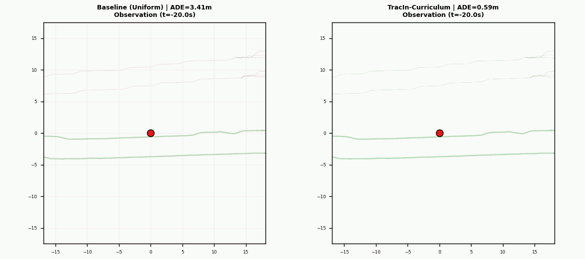
Our experiments use 5,148 training scenarios from the nuPlan benchmark, spanning four geographic locations with diverse driving conditions.
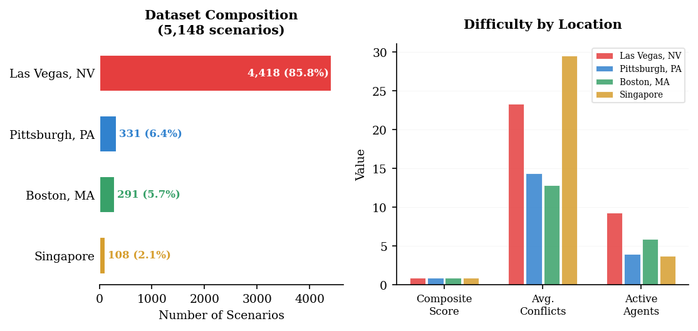
Left: Dataset composition by location. Las Vegas dominates (85.8%). Right: Average difficulty metrics vary across cities.
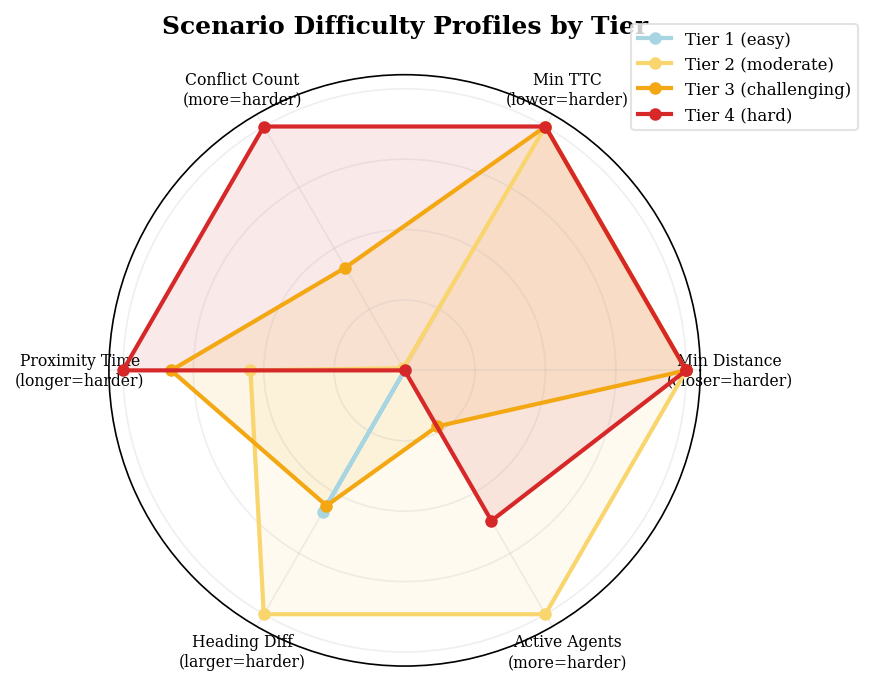
Radar chart of six difficulty metrics across four scenario tiers.
We compare three scenario scoring methods for curriculum learning on GameFormer:
1. Metadata scoring — six interaction-difficulty features averaged into a composite score.
2. TracIn scoring — gradient dot-product measuring direct contribution to validation loss reduction. Computed in 46 minutes on a single GPU.
3. Hybrid scoring — rank-average of TracIn and metadata percentile ranks.
All scores feed into a three-phase curriculum: warm-up (uniform, epochs 1–3), ramp-up (progressive weighting, epochs 4–8), and focus (full differentiation, epochs 9–20).
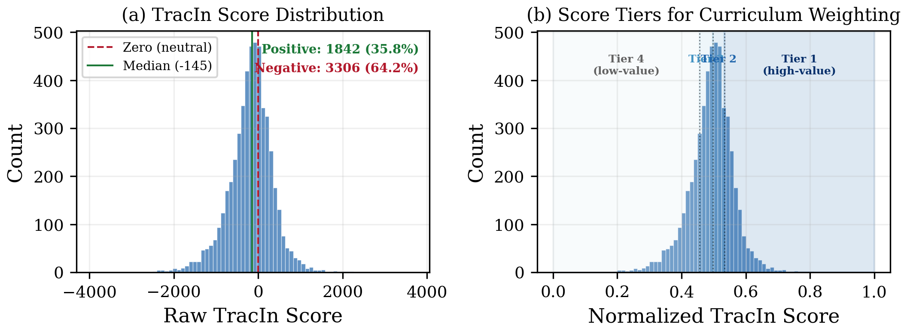
TracIn score distribution. 64.2% have negative (gradient-opposing) scores.
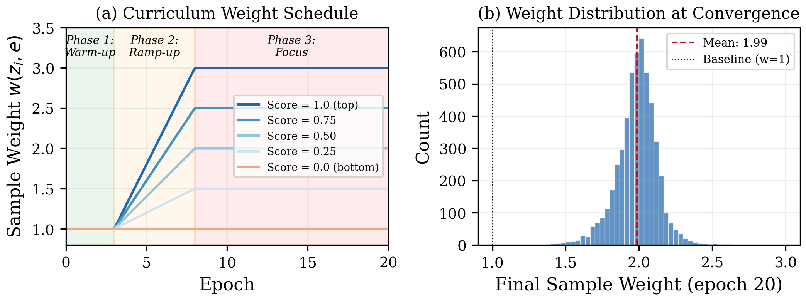
Three-phase curriculum: weights ramp from uniform to fully differentiated.
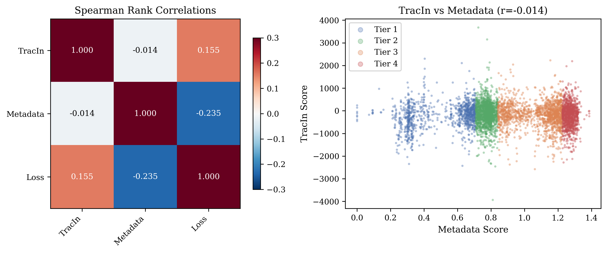
TracIn and metadata scores are nearly orthogonal (ρ = −0.014).
We computed five different data valuation scores for all 5,148 training scenarios. The relationships between these methods reveal why gradient-based valuation works.
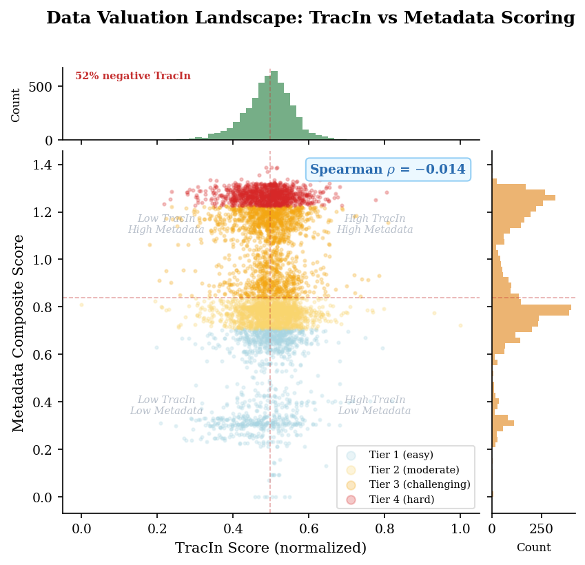
Data valuation landscape: TracIn vs. metadata scores. Near-zero Spearman correlation confirms the two methods capture orthogonal information.
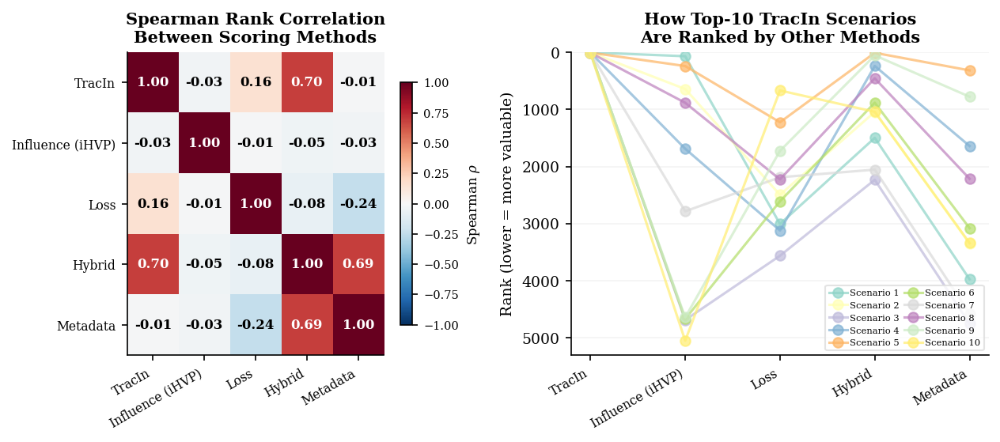
Left: Spearman rank correlations between all five scoring methods. Right: How the top-10 TracIn scenarios are ranked by other methods.
| Method | Plan ADE (m) ↓ | Plan FDE (m) ↓ | Plan AHE (rad) ↓ | CV |
|---|---|---|---|---|
| Baseline (uniform) | 1.772 ± 0.134 | 3.837 ± 0.218 | 0.146 ± 0.021 | 7.6% |
| Metadata curriculum | 1.822 ± 0.014 | 3.996 ± 0.216 | 0.142 ± 0.010 | 0.7% |
| TracIn curriculum | 1.704 ± 0.029 | 3.731 ± 0.394 | 0.133 ± 0.019 | 1.7% |
| Loss SPL | 2.003 ± 0.391 | 3.678 ± 0.200 | 0.180 ± 0.041 | 19.5% |
| Hybrid curriculum | 1.766 ± 0.069 | 3.999 ± 0.185 | 0.134 ± 0.016 | 3.9% |
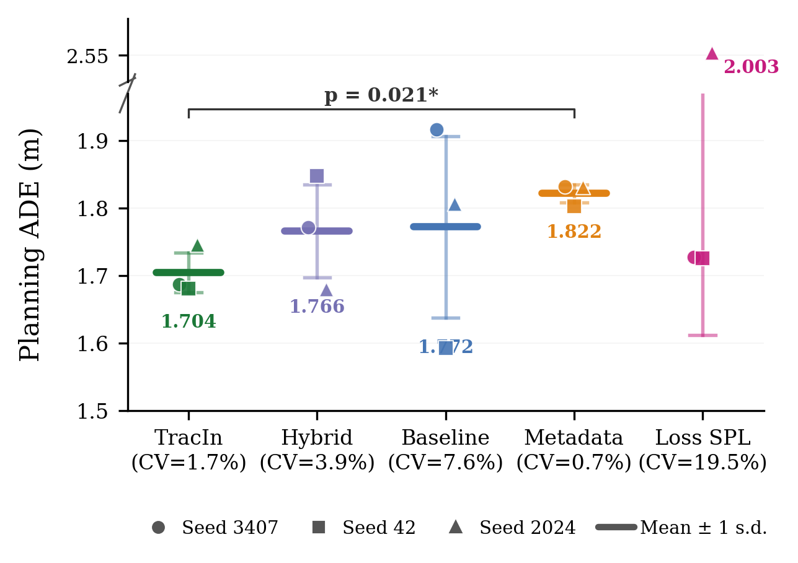
Multi-seed planning ADE comparison (n=3 seeds). *p=0.021 (paired t-test, TracIn vs. Metadata).
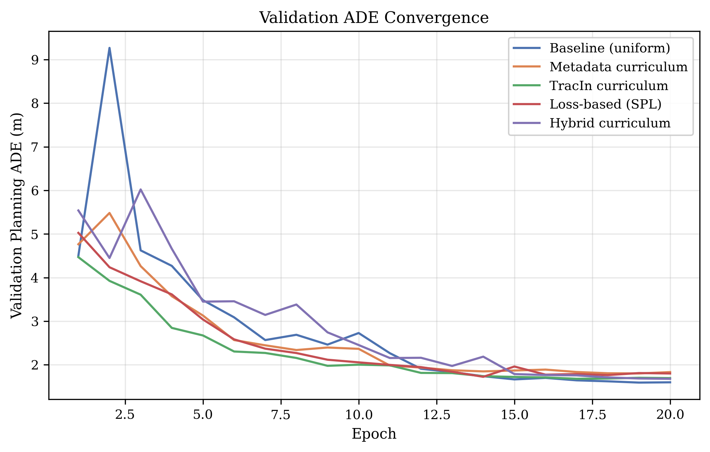
Validation ADE over training epochs.
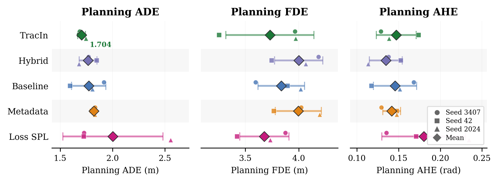
Dot-and-whisker comparison across five methods and three metrics.
We trained 28 experiment configurations across the full design space. The animations below reveal how different training strategies affect convergence.
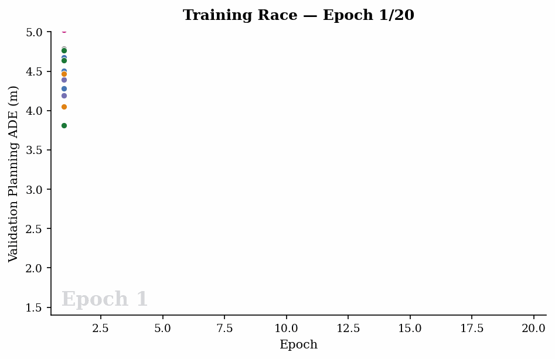
Training race: validation ADE across 20 epochs for all configurations. TracIn curriculum (green, bold) converges to the lowest ADE.
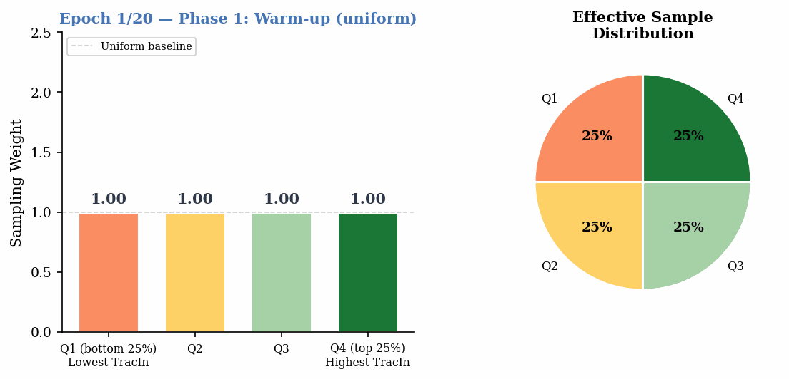
Curriculum weight evolution across the three training phases.
Variance reduction via gradient alignment. TracIn-weighted sampling achieves higher expected cosine similarity between mini-batch gradients and the validation gradient than uniform sampling. By the rearrangement inequality, aligning sample weights with gradient-similarity scores minimizes the variance of the weighted gradient estimator.
Signal dilution in hybrid scoring. When an informative scoring source (TracIn) is rank-averaged with an orthogonal uninformative source (metadata), the resulting hybrid attenuates the informative signal by a factor of √2 in expectation.
Curriculum weighting vs. hard selection. Hard selection introduces infinite KL divergence when the validation distribution has support outside the selected subset. Soft weighting preserves full support while concentrating mass on high-value scenarios.
1. Gradient-based > metadata-based curriculum — TracIn curriculum significantly outperforms metadata curriculum (p=0.021, Cohen's dz=3.88).
2. Orthogonality of scoring methods — TracIn and metadata scores have Spearman ρ = −0.014, capturing entirely different information.
3. Weighting works, selection fails — Curriculum weighting yields ADE=1.704, while hard 20% selection degrades to ADE=3.687 (2× worse than baseline).
4. LiSSA influence functions fail at scale — Classical iHVP estimation produces random noise for the 10M-parameter GameFormer. TracIn provides a practical alternative.
@inproceedings{li2026gradient,
title={Gradient-Based Data Valuation Improves Curriculum Learning
for Game-Theoretic Motion Planning},
author={Li, Shihao and Li, Jiachen},
booktitle={IEEE Conference on Decision and Control (CDC)},
year={2026}
}